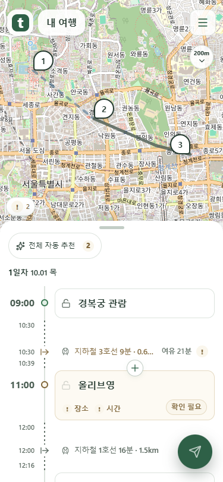
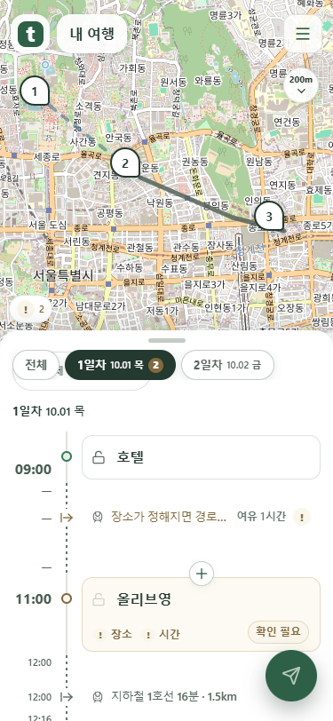

출발 시각·화살표·이동 설명을 한 줄로
출발 시각에는 시각만 표시합니다. 원형 점 대신 시작선에서 오른쪽으로 나가는 화살표를 사용합니다. 이미지를 누르면 원본을 볼 수 있습니다.
출발 시각이 있는 경우
시각·출발 화살표·이동 설명이 같은 높이에 놓입니다. 점선 위의 일정 끝 시각과 아래 도착 시각은 유지합니다.

시각이 없는 경우와 스크롤한 상태
시각이 없어도 같은 위치에 대시를 표시합니다. 떠 있는 일차 단추 아래로 스크롤해도 출발 표시가 이동 설명을 따라갑니다.
